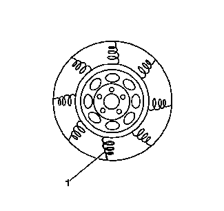

轮胎和车轮总成隔振测试
作用力变化
作用力变化指轮胎和车轮总成的径向或横向运动，十分类似于跳动，但是作用力变化与轮胎结构的变化有关。即便是轮胎和车轮总成的跳动和平衡都在规格范围内，轮胎结构中存在的变化实际上仍可导致车辆的振动。
径向力变化

径向力变化指轮胎旋转并接触路面时，轮胎侧壁刚性部位的差异。由于轮胎各帘布层内的搭接头，轮胎侧壁具有一些刚性部位，但是这些刚性部位之间的差异不会产生问题，除非作用力变化过大。当轮胎和车轮总成接触路面时，轮胎侧壁中的坚硬点（1）会使轮胎和车轮总成向上反弹。
横向力变化

横向力变化指轮胎旋转并接触路面时，轮胎内帘布带刚度或一致性的差异。轮胎帘布带可能存在刚度或一致性差异，但是这些差异不会产生问题，除非作用力变化过大。轮胎帘布带的这些变差会使车辆侧向或横向偏转。轮胎内部的帘布带移位可能会导致横向力变化。
在大多数横向力变化过大的情况下，车辆在平整路面上以8-40公里/小时（5-25英里/小时）低速行驶时会出现颤振或摆动。
隔振测试程序
为了确定车辆是否存在作用力变化，执行以下测试。
- 1.用一套已知良好、经过测试且尺寸和型号相同的轮胎和车轮总成替换原来怀疑导致振动的总成。参见轮胎和车轮的拆卸和安装。
- 2.上路测试车辆，确定振动是否仍然存在。参见振动分析－路试。
- 3.如果使用了已知良好的轮胎和车轮总成后振动仍然出现，则导致振动的原因不是作用力变化。
- 4.如果使用已知良好的轮胎和车轮总成后振动消除了，则根据拆下前所作的装配标记安装原来的轮胎和车轮总成中的一个。参见轮胎和车轮的拆卸和安装。上路测试车辆，确定振动是否重新出现。参见振动分析－路试。
- 5.继续安装原来的其余轮胎和车轮总成，一次安装一套，然后进行路试，直到确定了是哪一套轮胎和车轮总成引起了振动。
- 6.更换引起振动的轮胎和车轮总成上的轮胎，然后平衡该总成。参见轮胎和车轮总成跳动量的测量－车下。